AR

The Shusha Island Coral Park will become a global center to showcase innovations to protect and restore coral reefs
 


The KAUST Reefscape Restoration Initiative is a large-scale coral reef restoration program in the Red Sea in the Kingdom of Saudi Arabia (KSA), begun in 2021 and funded by King Abdullah University of Science and Technology (KAUST) , a world-class graduate research university in Thuwal, Saudi Arabia on the Red Sea north of Jeddah, in partnership with NEOM , a region in northwest Saudi Arabia that is being sustainably developed from the ground up with the world’s most advanced technologies to redefine how people live, work, and play.
The initiative will begin with a 100-hectare reef restoration project at Shushah Island. This will be a global demonstration of coral restoration that integrates innovative, in-Kingdom and internationally developed technologies, pioneering propagation, planting and monitoring approaches, and international expertise to accelerate solutions for reef ecosystems at a time of unprecedented environmental change. The program’s first reefscape restoration site is located near Shushah Island, approximately 20km off the shore of NEOM. Shushah Island. While the island itself is relatively small,


On The Shores Of The Red Sea


Support NEOM and Saudi Arabia’s goals to study and protect Red Sea marine environments


NEOM is a region in northwest Saudi Arabia that is being sustainably developed from the ground up with the world’s most advanced technologies to redefine how people live, work, and play, and is a key project in Saudi Arabia’s Vision 2030. NEOM provides the conceptual and scientific framework and vision, government personnel and logistical support, and the 100-hectare Red Sea site and land-based locations for building coral nurseries.

NEOM is a region in northwest Saudi Arabia that is being sustainably developed from the ground up with the world’s most advanced technologies to redefine how people live, work, and play, and is a key project in Saudi Arabia’s Vision 2030. NEOM provides the conceptual and scientific framework and vision, government personnel and logistical support, and the 100-hectare Red Sea site and land-based locations for building coral nurseries.